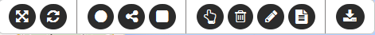

Permite crear, modificar y borrar dibujos (puntos, líneas y áreas) que pueden ser útiles para evidenciar, marcar o comentar algunos elementos relevantes, usando el mapa visualizado como referencia y asociando eventuales comentarios.
Si el usuario ha accedido al Geoportal con una autentificación, estos elementos pueden ser guardados, así que al reconectarse el usuario pueda visualizar sus propios dibujos, que también pueden ser exportados en formato KML.
Si el usuario no está autenticado, al pulsar Dibujos se abre una barra que contiene las siguientes herramientas:

Fig.1 – Barra de Herramientas Dibujos
Si el usuario está autenticado, la barra contiene también la función Guardar Dibujos.
Al reconectarse, el usuario autenticado encuentra sus propios dibujos guardados, que se cargan automáticamente